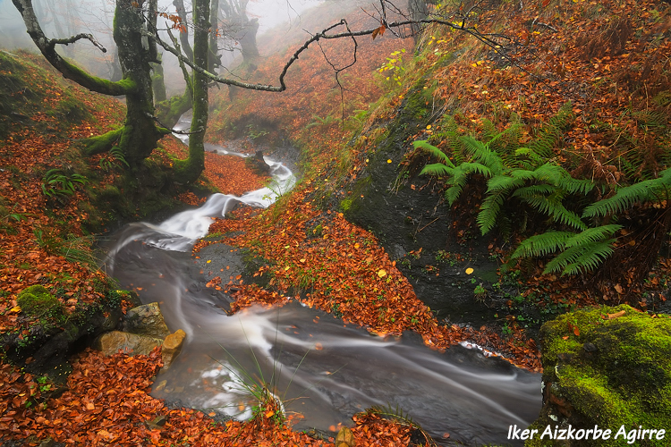

Udazkena |
||
| Udazkena, larrazkena edo udagoiena eremu-epeleko urtaroetako bat da. Aurretik uda du eta udazkenaren atzetik, negua dator. Uzten urtaroa da, adibidez, arto eta ekilorearena. | ||
Koloreek eztanda egiten dute urteko sasoi horretan. Zuhaitzek soinekoz aldatzen dute, eta orain arteko paisaia berdeak mila kolorez apaintzen dira, ikuspegi ikusgarriak sortuz. Euskal Herrian badira udazkenean bisitatu beharreko leku ugari.
|
 | |